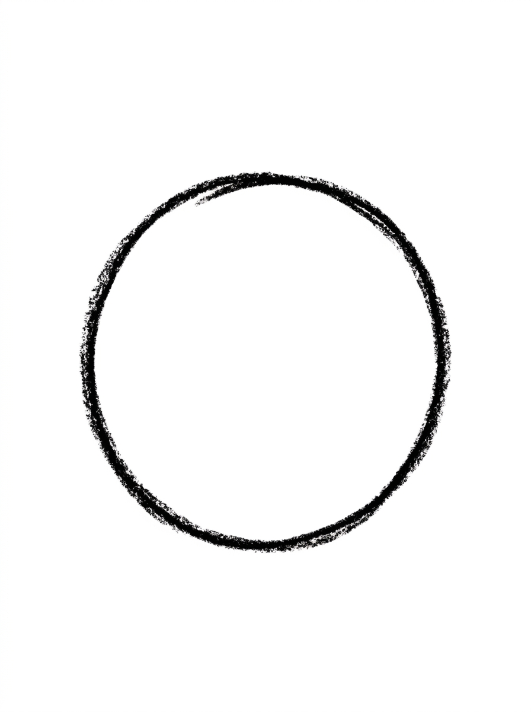
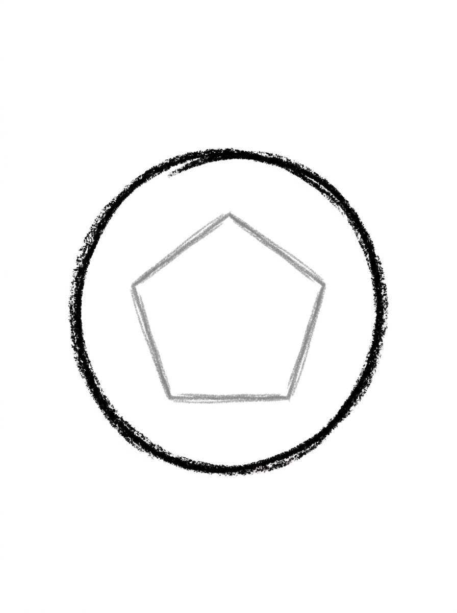
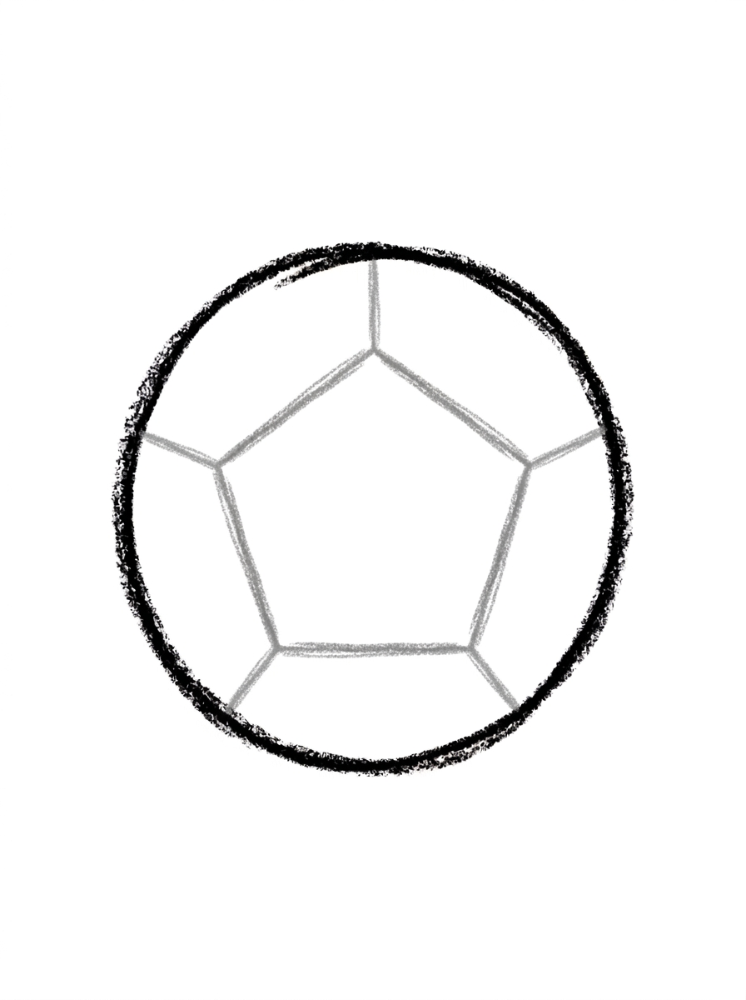
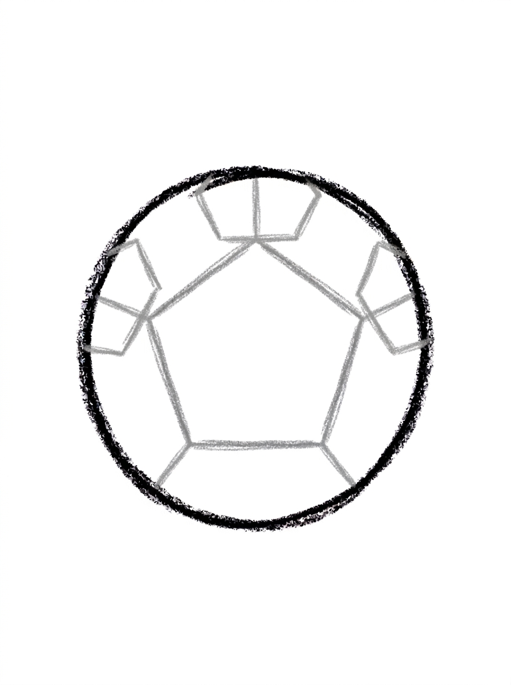
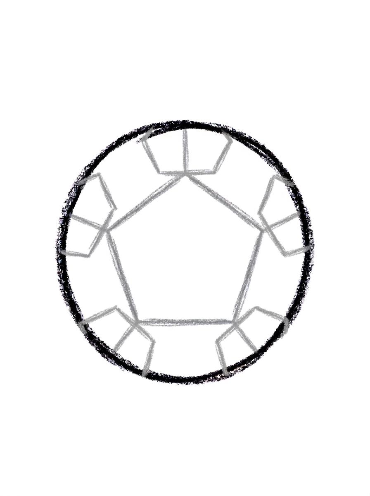

Soccer Ball Drawing for Kids How to Draw A Soccer Ball in 6 Easy Steps
Quick Answer
Draw a soccer ball in six easy steps: one big circle, a five-sided pentagon in the center, five straight seam lines running out to the edge, three more pentagons along the top, and two along the bottom. Color every pentagon black and leave the rest white. Made for ages 3 and up — no signup needed, just print and draw.
At a Glance
- Subject: How to draw a soccer ball
- Ages: 3+
- Steps: 6 steps
- Time: ~15 min
- Difficulty: Easy
- Supplies: Paper, crayons
A soccer ball looks tricky until you see the trick: the whole pattern grows out of one five-sided pentagon sitting in the middle of a circle. Kids who love sports — and kids who love patterns — both get a kick out of how the ball assembles itself.
✏️ Draw Your Soccer Ball in 6 Easy Steps
One step per box — this step by step soccer ball drawing shows each new part in a different color so kids can see exactly what changed.
Step 1: The Ball

Draw one big circle in the middle of your paper. This round shape is your soccer ball.
Step 2: The Center Patch

Draw one pentagon — a shape with five sides — right in the center of the circle, not touching the edge. This is the ball's center patch.
Step 3: The Seams

Draw five straight lines, one from each corner of the pentagon, running out to touch the circle. These are the ball's seams.
Step 4: The Top Patches

Draw three more pentagons around the top edge of the ball — one at the top, one at the upper left, and one at the upper right. Each one is cut off by the circle's edge, so only part of it shows, and each one sits at the end of a seam.
Step 5: The Bottom Patches

Draw the last two pentagons around the bottom edge of the ball — one at the lower left and one at the lower right, each cut off by the circle's edge and sitting at the end of a seam.
Step 6: Color It In

Color your soccer ball! Black for the center pentagon and all five edge patches, and leave the rest white with a little light gray shading along the bottom edge. Great drawing!
📊 Soccer Ball Drawing by Age
Every age can join in — just adjust the job.
| Age | What they can do | Tip |
|---|---|---|
| 3-4 | Draw the big circle and the center pentagon, and color all the patches black. | Counting the pentagon's five sides together with a fingertip is the best way to make a five-sided shape click at this age. |
| 4-5 | Draw the five seam lines from the pentagon's corners out to the circle's edge. | Turn the paper as they work — drawing a line toward the edge is easier when the edge they're aiming for is at the top. |
| 6+ | Complete all six steps, including placing the five edge pentagons so each one sits at the end of a seam. | The edge patches are cut off by the circle, so only part of each pentagon shows — pointing that out first prevents 'I did it wrong' frustration. |
🖨️ Download Your Free Soccer Ball Drawing Printable
The printable lays out all 6 steps one per box, big enough for little hands — kids draw right alongside each step.
⬇️ Open Free Printable 🖨️ Print🎁 Free printable for ages 3+
⚽ Design Your Own Ball
After the ball is colored, invent your own ball: draw a big circle and fill it with a pattern your child designs — stars, stripes, zigzags, polka dots, or rainbows. Then compare the two balls side by side and talk about which pattern would be easiest to spot rolling across a field. For an extra challenge, draw a row of three balls: the tutorial soccer ball, the invented ball, and one that's half and half.
What You'll Need to Draw A Soccer Ball
You need a pencil, an eraser, and a black crayon or marker — that's it for color, which makes this a great low-mess tutorial. The center pentagon and all five edge patches go black, the rest of the ball stays white, and a light grey crayon adds optional shading along the bottom edge to make the ball look round.
What They're Learning
This is the most geometry-rich tutorial in the set: kids draw a circle, learn the pentagon (and count its five sides), and draw five straight lines radiating from corners to an edge. Steps 4 and 5 teach pattern logic — every edge patch sits at the end of a seam, three on top and two on the bottom — plus the idea of a shape being 'cut off' by another shape, since only part of each edge pentagon shows.
Make It Yours
Try a team-color ball by filling the patches in your child's favorite team's colors, a rainbow ball with a different color in every patch, a beach ball with wide stripes instead of pentagons, or a mini ball next to the big one using the same steps drawn smaller. Adding a simple grass line and a goal behind the ball turns it into a full soccer scene.
🛒 Our Favorite Drawing Supplies
These are the supplies we reach for in our own home — washable (because kids), quality paper, and enough colors to avoid fights.
As an Amazon Associate, MomYouNeedThis earns from qualifying purchases — at no extra cost to you.
💡 Soccer Ball Drawing Tips for Parents
The center pentagon in step 2 decides everything else, so take an extra moment there: it should float in the middle of the circle without touching the edge, because the five seam lines need room to run outward. If counting five sides is new, trace them together slowly — corner, corner, corner, corner, corner — until your child can feel the shape's rhythm.
In steps 4 and 5, remind your child that the edge pentagons are supposed to be cut off by the circle — only part of each one shows, like the ball is hiding the rest. Kids often think a partial shape means they made an error, and hearing 'it's meant to look like that' ahead of time saves the whole drawing.
✏️ Soccer Ball Drawing Step by Step
A soccer ball looks like a pattern puzzle, and that's precisely why kids love finishing one — it feels like cracking a code. The secret is that the whole pattern grows out of one pentagon: place it in the center, and every seam and patch that follows has a rule telling it where to go.
That rule-based build is wonderful for kids who get frustrated by freehand animals. There's no guessing about what a soccer ball 'should' look like from imagination; the steps provide the structure, and each step's result can be checked against the picture in a second.
It also sneaks in real geometry. Your child will draw a circle, a five-sided pentagon, five straight lines, and five partial pentagons — shapes named, counted, and placed on purpose. Teachers call that early geometry; kids just call it drawing a ball.
See free soccer ball printable for more.
✏️ One Shape Per Step, Six Steps Total
Step 1 is the ball itself: one big circle. Step 2 draws one pentagon — five sides — in the exact center, not touching the edge. Step 3 draws five straight seam lines, one from each corner of the pentagon, running out to touch the circle.
Step 4 adds three more pentagons around the top edge — top, upper left, upper right — each cut off by the circle's edge so only part shows, and each sitting at the end of a seam. Step 5 finishes the pattern with the last two pentagons at the lower left and lower right.
Step 6 is the fastest color step on this page: black for the center pentagon and all five edge patches, white left everywhere else, with a little light grey shading along the bottom edge if your child wants it to look round. The whole drawing is one circle, six pentagons, and five lines.
See free soccer ball printable for more.
⚽ Soccer Ball Pattern Practice
Look closely and a soccer ball is a repeating pattern: pentagon, seam, pentagon, seam, all the way around. Pattern recognition is a core early-math skill, and this drawing is a hands-on way to feel it — your child predicts where the next patch goes before drawing it, because the seam already points there.
That predictability makes this tutorial especially good for kids who like order. Each patch lands exactly where a seam ends, so the drawing almost checks itself. If a patch floats away from its seam, it stands out right away and can be adjusted before coloring.
Try extending the pattern talk afterward: find other pentagon patterns (a house shape is a square plus a triangle roof that kids often call a pentagon), or count the ball's parts together — 6 pentagons, 5 seams, 1 circle. Counting a drawing you just made is counting that feels earned.
See free soccer ball printable for more.
❓ Soccer Ball Drawing FAQs
What is the easiest way to draw a soccer ball?
Start with one big circle, then draw a five-sided pentagon in the center. Draw a straight line from each pentagon corner out to the circle's edge, then add part-pentagons around the edge at the end of those seams — three on top, two on the bottom — and color every pentagon black.
What age is this soccer ball drawing for?
It's made for ages 3 and up. The circle and center pentagon are doable for preschoolers with a little guidance, and the repeating pattern of seams and patches is genuinely satisfying for 5- and 6-year-olds.
What supplies do we need?
A pencil, an eraser, paper, and just one color for finishing: black (or dark grey) for the center pentagon and the five edge patches. The rest of the ball stays white, with a little optional light grey shading along the bottom edge.
Is the printable really free?
Yes — every printable on MomYouNeedThis is 100% free, including this soccer ball drawing tutorial. There is no signup, no email, and no catch — just download, print, and draw.
How do I print it?
Open the PDF and choose Print, then set the scale to 100% (sometimes called Actual Size) so the steps print at full size. The tutorial is designed for regular US Letter paper, and plain printer paper works perfectly.
What is a pentagon, and how many are on the ball?
A pentagon is a shape with five sides. The ball has six of them in total: one whole pentagon in the center, and five partial ones around the edge — three along the top and two along the bottom — each one cut off by the circle so only part of it shows.
Why do the lines run from the pentagon to the edge?
The five straight lines are the seams — one runs from each corner of the center pentagon out to the circle's edge. Every edge patch sits at the end of a seam, which is what makes the pattern lock together like a real ball.
Can the patches be a different color?
Yes — real balls come in many colors now. Keep the pattern the same and swap black for blue, red, or rainbow patches. The pattern is what makes it read as a soccer ball; the colors are free choice.
📚 Keep Exploring
- ✏️ All 53 Drawing Tutorials 53 free step-by-step drawing tutorials for kids.
- 🎀 Cute Coloring Free cute coloring pages for kids.
- ✏️ Drawing Practice Free printable drawing pre-writing worksheet for toddlers.